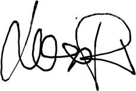

Gender Equality Plan (GEP) for Motion Mode of Dialogue in Tyrol Association for Visual and Performative Art
Date of Implementation: October 2024
Review Date: October 2025
1. Introduction
Motion Mode of Dialogue was established by two women for whom gender equality is not just a principle, but a matter of life and survival. With a deep commitment to challenging societal norms, they believe in creating spaces where gender equality is actively addressed and supported, recognizing the urgency and impact it has on the lives of many individuals in the arts and beyond.
The “Motion Mode of Dialogue in Tyrol” is committed to fostering an environment of equality, diversity, and inclusion. As an association for visual and performative art, we recognize the importance of gender balance in artistic expression and organizational management. This Gender Equality Plan (GEP) sets out clear goals, measures, and monitoring strategies to address gender disparities and ensure equal opportunities for all, regardless of gender.
2. Objectives
The key objectives of this GEP are:
1. Ensure gender balance in leadership, decision-making, and artistic representation.
2. Promote equal opportunities for all genders in recruitment, career development, and artistic projects.
3. Address and reduce gender gaps in pay, participation, and career advancement.
4. Foster an inclusive and supportive work environment that promotes work-life balance and well-being for all genders.
3. Gender Analysis
Before implementing this plan, we will conduct an internal gender audit to assess the current gender distribution in various areas of our association:
- Leadership and governance roles (e.g., board members, project leaders)
- Participation in artistic projects, workshops, and performances
- Access to funding and resources
- Pay and benefits analysis, including any freelance or contractual arrangements
4. Measures and Actions
4.1. Leadership and Decision-Making
- Goal: Achieve a balanced gender representation in any working collaboration.
-
Actions:
- Ensure at least 50% representation of women and non-binary individuals on the board and in key decision-making committees.
- Encourage women and underrepresented genders to apply for any art/culture projects and leadership development workshops.
- Goal: Ensure gender diversity in the curation, participation, and presentation of visual and performative arts projects.
-
Actions:
- Commit to ensuring that at least 50% of artists featured in our exhibitions, performances, and workshops are women or from underrepresented genders.
- Implement gender-sensitive curation policies to ensure diverse perspectives are reflected in artistic projects and events.
- To offer art platforms for people to talk and share about gender equality.
- Goal: Promote equal opportunities in recruitment, employment, and freelance contracts.
-
Actions:
- Ensure that job postings and project opportunities use gender-inclusive language and are accessible to a diverse range of applicants.
- Implement a blind recruitment process for reviewing applications to reduce gender bias in the hiring process.
- Track gender data during the recruitment process and monitor trends in hiring, promotions, and retention rates.
- Goal: Create an inclusive environment that supports all genders in achieving a healthy work-life balance.
-
Actions:
- Provide flexible working arrangements for staff, artists, and freelancers to accommodate family and caregiving responsibilities.
5. Training and Awareness
To foster an inclusive culture, we will:
- Prioritize the projects that address the issue of gender roles.
- Organize workshops and any other culture event, based on diversity, and inclusivity for all participants and artists involved in our association’s projects.
6. Monitoring and Evaluation
To ensure progress, we will:
- Chair women of our association are responsible for overseeing the implementation of this plan and conducting an annual review of gender balance within the organization.
- Collect and analyze gender-disaggregated data on employment, artistic participation, and pay at least once a year.
- Publish an annual Gender Equality Report that highlights progress made, challenges faced, and any adjustments needed to meet our objectives.
- Regularly update the GEP to align with new challenges or changes in the gender landscape.
7. Leadership Commitment
The leadership of “Motion Mode of Dialogue in Tyrol” is fully committed to this Gender Equality Plan. We pledge to provide the necessary resources and support to ensure the successful implementation of the GEP. Accountability for achieving these objectives lies with the board of directors, in collaboration with the Gender Equality Committee.
8. Conclusion
With the Gender Equality Plan, Motion Mode of Dialogue in Tyrol reaffirms its dedication to promoting gender equality in all aspects of its work. By implementing this plan, we aim to create an inclusive, supportive, and diverse environment that reflects the values of fairness and equality in the visual and performative arts sector.
October 2024, Innsbruck
Tamara Maksymenko

Lucilla Patrizi